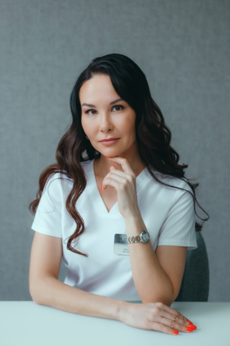

Врач-косметолог и ведущий специалист клиники косметологии Династия
Стаж работы 19 года
Специализация
Владеет всеми методиками современной косметологии, в том числе инъекционными, аппаратными, нитевыми технологиями:
- Ботулинотерапия (Диспорт, Ботокс, Ксеомин)
- Введение филлеров гиалуроновой кислоты, гидроксиапатита кальция, полимолочной кислоты
- Плазмотерапия: пробирки Plasmolifting, Regenlab
- Нитевые технологии: Aptos, Artlift
- Аппаратная косметология, в том числе различные виды лазеров (СО2, неодимовый, эрбиевый), процедуры широкополосного импульсного света для лечения пигментации, омоложения, удаления сосудов, новообразований кожи
- Аппаратный SMAS-lifting (Ultraformer III)
- Нитевой лифтинг APTOS
- Лазерное СО2 омоложение и лазерная коррекция рубцов
- Инъекционная косметология (ботулинотерапия, коллагенотерапия, инъекции Aesthefill)
Образование
- 2004 г. Окончила Кемеровскую государственную медицинскую академию по специальности «Лечебное дело»
- 2005 г. Интернатура «Дерматовенерология», Новокузнецкий ГИУВ
- 2011 г. Цикл ПП «Косметология», Алтайский государственный медицинский университет
- 2016 г. Продление сертификата по «Косметологии» на базе ГБОУ ДПО «Новокузнецкий ГИУВ» Минздрав РФ
- 2020 г. Продление сертификата по «Косметологии» на базе АНО ДПО «Национальный технологический университет», Москва
Повышение квалификации
Анастасия Алексеевна ежегодно принимает участие в международных конгрессах, посвященных косметологии «Intersharm professional», Москва, Санкт Петербург.
- 2021 г. Приняла участие в работе «Международного кавказского конгресса по пластической хирургии и дерматологии Kolkhida 2021», Грузия, Тбилиси
- 2019 г. «Инновации в косметологии, конференция организованная производителем линии препаратов Novocutan», Москва
- 2018 г. «Реабилитация после пластических операций. Современные методы контурной пластики», Калининград
- 2017 г. Выездное обучение для преподавателей фармачефтического холдинга Hyalual, Париж
- 2017 г. «Лазерные технологии в косметологической практике», Прага
- 2016 г. «Дерматоскопия в практике дерматолога, верификация новообразований кожи», Братислава
- 2015 г. «Нитевые технологии и контурная пластика», Рим
- 2014 г. «Современный взгляд на контурную пластику», Женева
- 2013 г. Юбилейная конференция Merz aesthetics «Инновации в косметологии и пластической хирургии», Париж
- 2008 г. «Гомеопатия в косметологии», Санкт Петербург
- 2007 г. «Озонотерапия в практике врача косметолога», Н.Новгород
Дипломы и сертификаты